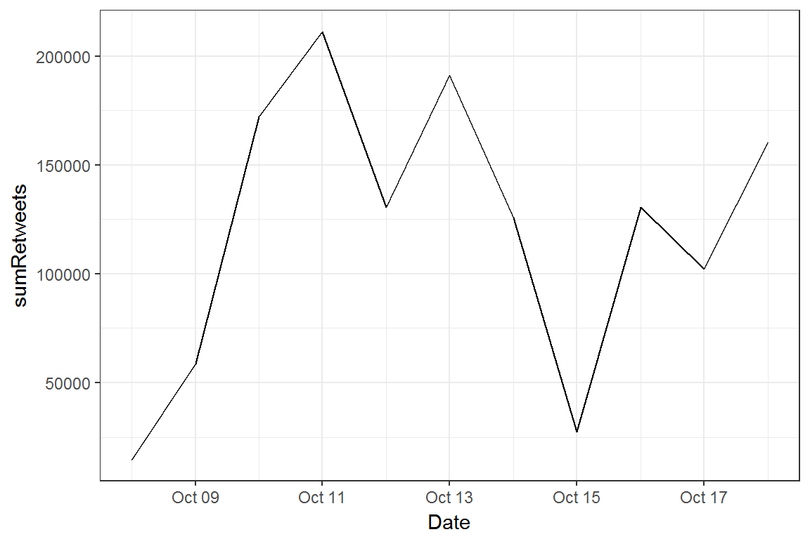
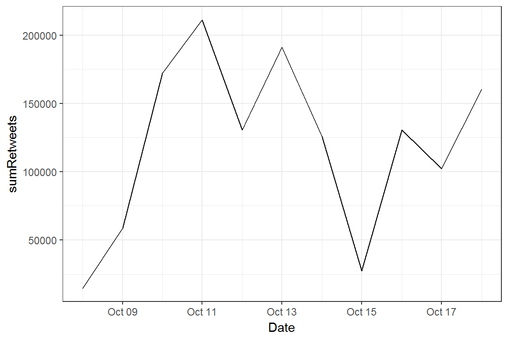

| Date | Tweet | Count |
|---|---|---|
| 2017-10-14 01:02:48 | Many people talking, with much agreement, on my Iran speech today. Participants in the deal are making lots of money on trade with Iran! | 739 |
| 2017-10-14 00:53:59 | Starting to develop a much better relationship with Pakistan and its leaders. I want to thank them for their cooperation on many fronts. | 1682 |
| 2017-10-13 22:01:57 | #WeeklyAddress |
4589 |
| 2017-10-13 18:09:00 | Today, I announced our strategy to confront the Iranian regime’s hostile actions and to ensure that they never acqu… https://t.co/nKOKERavGW | 11401 |
| 2017-10-13 17:41:36 | “Consumer confidence soars to highest level since 2004” | |
| d> |
||
| 2017-10-13 17:07:15 | In America, we don’t worship government - we worship God. | |
| #ValuesVotersSummit ht | tps://t.co/YQ3iDlWylK 12556 |
## [[1]]
## [1] "JenellaRB: RT @freedom4all61: @tedlieu When i wake up in the morning- I hope this is a 1,000,000+ RT! #25thAmendment <ed><U+00A0><U+00BD><ed><U+00B1><U+008D><ed><U+00A0><U+00BC><ed><U+00BF><U+00BC>"
##
## [[2]]
## [1] "trumpcardiac: RT @WILLIAMSKY12341: #FridayThe13th\n#trumpcare\nHoping Trump suffers a massive cardiac arrest today if he doesnt get arrested.\n#25thamendmen
"
##
## [[3]]
## [1] "ClaudiaBundrick: RT @write2bheard1: #25thAmendment https://t.co/P0Kua669GU"
##
## [[4]]
## [1] "Robvcastro: RT @funder: If you truly believe Trump shouldnt be president anymore then retweet this then tweet out this hashtag: #25thAmendment"
##
## [[5]]
## [1] "stilllwithher: RT @badgirl_loony: The #25thAmendment has been used 3 times to relieve presidents deemed unfit to govern each case involving physical hea
"
##
## [[6]]
## [1] "GigiGenest: RT @TerryTerse: Everything this deranged president touches is damaged or destroyed. Policies, relations, accords, people. Enough is enough.
"
##
## [[7]]
## [1] "SinCityChrisS1: RT @mcspocky: Never has a man
\n#25thAmendment \n@realDonaldtRump https://t.co/Pr5dIfgdRC"
##
## [[8]]
## [1] "DPValley: RT @mcspocky: Never has a man
\n#25thAmendment \n@realDonaldtRump https://t.co/Pr5dIfgdRC"
##
## [[9]]
## [1] "stilllwithher: RT @Pinche_Pi: @prettyblue1007 @Free_From_Trump @JamesFourM @MollyJongFast @AngrierWHStaff @TheRickWilson @DanScavino Yes, but please refra
"
##
## [[10]]
## [1] "DesbraRon: RT @funder: Note to @RealDonaldTrump: A loophole in the #25thAmendment lets 14 people remove a sitting president from office https://t.co/9
"
##
## [[11]]
## [1] "terri_goodheart: RT @Randysmith1956: Someone else is trying to get #25thAmendment trending. I think this might upset @realDonaldTrump so please, do not RETW
"
##
## [[12]]
## [1] "FeeneyGayla: RT @PrincessBravato: #25thAmendment\n#25thAmendment https://t.co/Wm3k7rFyU3"
##
## [[13]]
## [1] "1956Sue: RT @funder: If you truly believe Trump shouldnt be president anymore then retweet this then tweet out this hashtag: #25thAmendment"
##
## [[14]]
## [1] "12joc12: RT @funder: If you truly believe Trump shouldnt be president anymore then retweet this then tweet out this hashtag: #25thAmendment"
##
## [[15]]
## [1] "milleralgm: RT @PrincessBravato: The GOP IS SO CORRUPT THEY DONT CARE TRUMP IS A NATIONAL SECURITY THREAT!\n#25thAmendment\n#ImpeachTrump https://t.co/Go
"
##
## [[16]]
## [1] "stilllwithher: RT @Redheadonfire70: @realDonaldTrump You are a monster. #Trumpcare is designed to kill us all, you malignant, narcissist orange wart. #25t
"
##
## [[17]]
## [1] "LindaLo51053440: RT @mcspocky: Never has a man
\n#25thAmendment \n@realDonaldtRump https://t.co/Pr5dIfgdRC"
##
## [[18]]
## [1] "SantaCruzMag: RT @PrincessBravato: #25thAmendment\n#ImpeachTrump\n#TrumpNatSecRisk\n#ObstructionOfJustice\n#ElectionTampering https://t.co/AO0AWGtOnK"
##
## [[19]]
## [1] "GigiGenest: RT @dmoses76: How do we balance things happening so fast we need to pay attention, with its all so bad we cant handle watching anymore? #
"
##
## [[20]]
## [1] "1956Sue: #25thAmendment\n#25thAmendmentNow"
##
## [[21]]
## [1] "susie_mouse: RT @mmboucher8: Did you read this @realDonaldTrump? #25thAmendment https://t.co/5lDVm8IOyH"
##
## [[22]]
## [1] "Wisdom_of_Peace: RT @mcspocky: And Now A Word From Mike Pence\n#25thAmendment https://t.co/j4Eqk6mdW7"
##
## [[23]]
## [1] "stilllwithher: RT @RealJenEllis: @realDonaldTrump Over a week ago 4 SF soldiers were killed & you have yet to comment. My son is a soldier. You are not fi
"
##
## [[24]]
## [1] "TabulaRasa11: RT @mcspocky: And Now A Word From Mike Pence\n#25thAmendment https://t.co/j4Eqk6mdW7"
##
## [[25]]
## [1] "Juillet_Dix: RT @PrincessBravato: #25thAmendment\n#25thAmendment https://t.co/67QaidtRo9"## text
## 1 RT @freedom4all61: @tedlieu When i wake up in the morning- I hope this is a 1,000,000+ RT! #25thAmendment <ed><U+00A0><U+00BD><ed><U+00B1><U+008D><ed><U+00A0><U+00BC><ed><U+00BF><U+00BC>
## 2 RT @WILLIAMSKY12341: #FridayThe13th\n#trumpcare\nHoping Trump suffers a massive cardiac arrest today if he doesnt get arrested.\n#25thamendmen
## 3 RT @write2bheard1: #25thAmendment https://t.co/P0Kua669GU
## 4 RT @funder: If you truly believe Trump shouldnt be president anymore then retweet this then tweet out this hashtag: #25thAmendment
## 5 RT @badgirl_loony: The #25thAmendment has been used 3 times to relieve presidents deemed unfit to govern each case involving physical hea
## 6 RT @TerryTerse: Everything this deranged president touches is damaged or destroyed. Policies, relations, accords, people. Enough is enough.
## 7 RT @mcspocky: Never has a man
\n#25thAmendment \n@realDonaldtRump https://t.co/Pr5dIfgdRC
## 8 RT @mcspocky: Never has a man
\n#25thAmendment \n@realDonaldtRump https://t.co/Pr5dIfgdRC
## 9 RT @Pinche_Pi: @prettyblue1007 @Free_From_Trump @JamesFourM @MollyJongFast @AngrierWHStaff @TheRickWilson @DanScavino Yes, but please refra
## 10 RT @funder: Note to @RealDonaldTrump: A loophole in the #25thAmendment lets 14 people remove a sitting president from office https://t.co/9
## 11 RT @Randysmith1956: Someone else is trying to get #25thAmendment trending. I think this might upset @realDonaldTrump so please, do not RETW
## 12 RT @PrincessBravato: #25thAmendment\n#25thAmendment https://t.co/Wm3k7rFyU3
## 13 RT @funder: If you truly believe Trump shouldnt be president anymore then retweet this then tweet out this hashtag: #25thAmendment
## 14 RT @funder: If you truly believe Trump shouldnt be president anymore then retweet this then tweet out this hashtag: #25thAmendment
## 15 RT @PrincessBravato: The GOP IS SO CORRUPT THEY DONT CARE TRUMP IS A NATIONAL SECURITY THREAT!\n#25thAmendment\n#ImpeachTrump https://t.co/Go
## 16 RT @Redheadonfire70: @realDonaldTrump You are a monster. #Trumpcare is designed to kill us all, you malignant, narcissist orange wart. #25t
## 17 RT @mcspocky: Never has a man
\n#25thAmendment \n@realDonaldtRump https://t.co/Pr5dIfgdRC
## 18 RT @PrincessBravato: #25thAmendment\n#ImpeachTrump\n#TrumpNatSecRisk\n#ObstructionOfJustice\n#ElectionTampering https://t.co/AO0AWGtOnK
## 19 RT @dmoses76: How do we balance things happening so fast we need to pay attention, with its all so bad we cant handle watching anymore? #
## 20 #25thAmendment\n#25thAmendmentNow
## 21 RT @mmboucher8: Did you read this @realDonaldTrump? #25thAmendment https://t.co/5lDVm8IOyH
## 22 RT @mcspocky: And Now A Word From Mike Pence\n#25thAmendment https://t.co/j4Eqk6mdW7
## 23 RT @RealJenEllis: @realDonaldTrump Over a week ago 4 SF soldiers were killed & you have yet to comment. My son is a soldier. You are not fi
## 24 RT @mcspocky: And Now A Word From Mike Pence\n#25thAmendment https://t.co/j4Eqk6mdW7
## 25 RT @PrincessBravato: #25thAmendment\n#25thAmendment https://t.co/67QaidtRo9
## retweetCount
## 1 17
## 2 0
## 3 10
## 4 2534
## 5 45
## 6 96
## 7 20
## 8 20
## 9 276
## 10 3610
## 11 3029
## 12 32
## 13 2534
## 14 2534
## 15 52
## 16 45
## 17 20
## 18 20
## 19 68
## 20 0
## 21 104
## 22 50
## 23 268
## 24 50
## 25 47